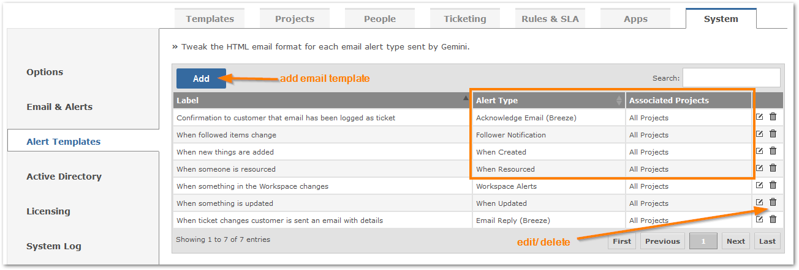
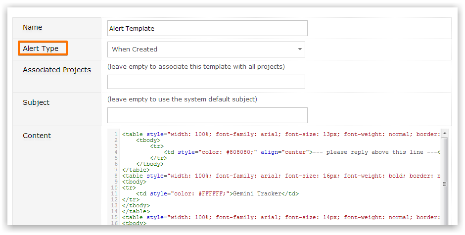

You can have common or project-specific outbound email templates.

If configured to do so, Gemini can fire an email in response to any of the following:
For each action, there is an Email Template that you can use and customize
You may change the names when creating or editing templates to make them more meaningful, particularly if you have project-specific Templates.

Pay special attention to the associated projects for the template. Leave this field blank to use the template across all projects.
You may edit any existing Template. When you add a new Template, the appropriate default HTML based on the event type is pre-filled for you.

Note the use in the image above of @(Model.TheItem.Type) for injecting item data into the email template. You can inject any of the below item fields - including custom fields.
The syntax for including the fields is @(Model.TheItem.FieldName) where the FieldName represents one of the below fields.
If a field might contain special characters (a description/name for example), or HTML (a link for example), use @Html.Raw(Model.TheItem.
The following table lists fields available from @(Model.TheItem) object.
| Field | Description |
|---|---|
| AffectedVersionNumbers | Any associated affected versions (comma separated) |
| Age | Number of days since item created |
| ClosedDate | The date and time this item was closed |
| ComponentNames | Components associated with item (comma separated) |
| Comments[n].Entity.Comment | Collection of all comments where "n" represents index of comment |
| Created | The date and time when the item was created |
| CustomFields["your custom field name"].Entity.Data | Text data of the custom field |
| CustomFields["your custom field name"].Entity.NumericData | Numeric data of the custom field |
| CustomFields["your custom field name"].Entity.DateData | Date data of the custom field |
| CustomFields["your custom field name"].FormattedData | Lookup text data of the custom field (for SQL table driven custom fields) |
| Description | The full description of the item |
| DueDate | When work should complete for the item |
| Elapsed | Number of minutes since item opened till closure |
| EstimatedEffort | The number of hours and minutes to complete item (0h 0m format) |
| ExcessTime | The number of hours and minutes exceeding original estimate (0h 0m format) |
| FixedInVersion | Any associated version |
| Id | The id of the item (e.g. 23456) |
| IssueKey | The key of the item (e.g. GEM-23456) |
| LastComment | Latest comment for the item |
| LoggedHours | Total number of hours logged against this item |
| LoggedMinutes | Total number of minutes logged against this item |
| OriginatorData | Any associated source data for item (e.g. email address) |
| PercentComplete | How much work has been completed (e.g. 25%) |
| Points | Allocated points for item |
| Priority | The current priority of the item (e.g. High) |
| ProjectCode | The project code that the item belongs to (e.g. ACME) |
| ProjectName | The project name that the item belongs to (e.g. My Project) |
| RemainingTime | The number of hours and minutes to remaining for item (0h 0m format) |
| Reporter | The fullname of the user who reported the item (e.g. Joe Bloggs) |
| Resolution | The current resolution of the item (e.g. Complete) |
| ResolvedDate | The date and time this item was marked as resolved |
| ResourceNames | The resources assigned to the item (comma separated) |
| Revised | The date and time when the item was last revised |
| Reviser | The name of the user who last revised the item |
| Severity | The current severity of the item (e.g. Showstopper) |
| IsInSLA | Check if the item part of SLA |
| SLATimeLeftFull | The SLA time left in days hours minutes format (1d 2h 3m) |
| SLATimeLeftMinutes | How many minutes left for SLA |
| SLATimePassedMinutes | How many minutes have passed for SLA |
| StartDate | When work should commence on the item |
| Status | The current status of the item (e.g. Unassigned) |
| TimeLogged | The number of hours and minutes to logged against item (0h 0m format) |
| Title | The title of the item (e.g. Fix Cross-browser issues) |
| Type | The type of the item (e.g. Bug) |
| Visibility | The visibility of the item (e.g. Everyone) |
| Votes | The number of votes for this item |
The following table lists all fields available from @(Model) object (that's the associated workspace).
| Field | Description |
|---|---|
| CardKey | The key of the card - usually the project code |
| CardDescription | The user-specified title of the card |
| CardComment | Optional comment associated with the card |
| CardUrl | The URL to the page that the card points to |
| ChangeCount | The number of changes that took place for items within the card's sceop |
The following table lists fields available from @(Model) object associated with the "Email Reply (Breeze)" alert template).
| Field | Description |
|---|---|
| Model.Sender.Fullname | The fullname of the user sending the email reply from Gemini |
| Model.Sender.Entity.Language | The language code e.g. En-US of the user sending the email reply from Gemini |
| Model.Sender.Entity.Email | The email address of the user sending the email reply from Gemini |
| Model.Sender.Entity.Firstname | The firstname of the user sending the email reply from Gemini |
| Model.Sender.Entity.Surname | The surname of the user sending the email reply from Gemini |
| Model.TheRecipient.Fullname | The fullname of the email recipient |
| Model.TheRecipient.Entity.Language | The language code e.g. En-US of the email recipient |
| Model.TheRecipient.Entity.Email | The email address of the email recipient |
| Model.TheRecipient.Entity.Firstname | The firstname of the email recipient |
| Model.TheRecipient.Entity.Surname | The surname of the email recipient |
For standard messages e.g. Confirmation to Customer That Ticket Has Been logged, you might interrogate the language code of the recipient and based on the result change the message text
For example
Dear @Model.TheRecipient.Fullname,
Dutch language message
Dear @Model.TheRecipient.Fullname,
@if(Model.TheRecipient.Entity.Language=="nl-NL"){
The following table lists fields available from @(Model) object associated with the "Acknowledge Email (Breeze)" alert template only.
| Field | Description |
|---|---|
| Model.NewUserAdded | Check if the user has just been created by the process of emailing a Gemini mailbox that is set to create new users. The property is a boolean (true/false) |
| Model.NewUserName | The username of the new user |
| Model.NewUserPassword | The password of the new user |
You will find base HTML files for the default Email Templates in the App Data\Notifications folder.